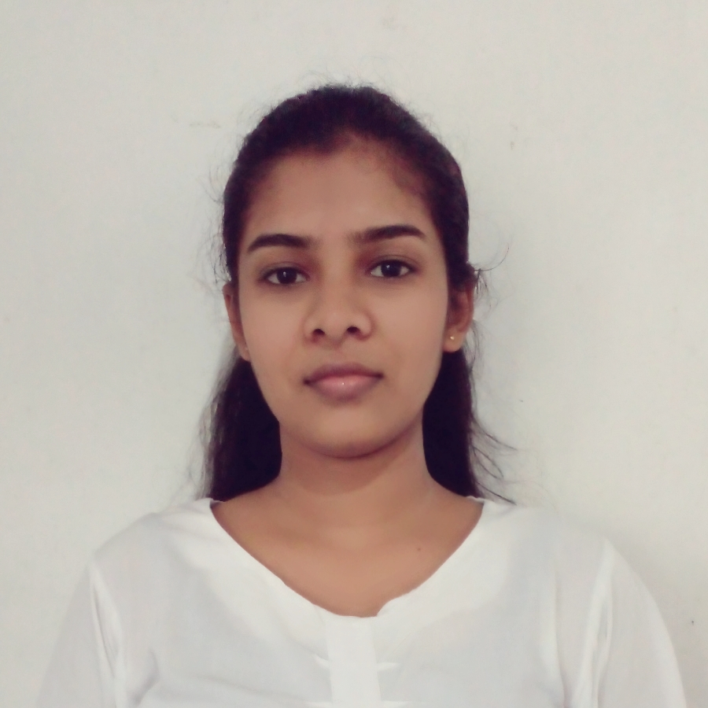

VIHARI GUNARATHNA
PROFILE
An undergraduate student of Batchelor of software engineering student at the Open University Sri Lanka. Possess teamworking skills with strong leadership and excellent communication skills in Sinhala & general communication skills in English.
Keen to pursue a career in IT sector.
SKILLS
ADDITIONAL SKILLS
- Languages:
English (Intermediate)
Sinhala (Native)
- Microsoft Office:
Proficient in Word, PowerPoint, and Excel.
- Videos and Photos Editing
CONTACT
Phone:
+9477 1793257
Email:
dviha7@gmail.com
LinkedIn:
www.linkedin.com/in/vihari=gunarathna
Address:
D/2/2, Wendesi idama,
Poththakumbura Road,
Eheliyagoda.
|
EDUCATION
The Open University | Colombo, Sri Lanka | (2021–Present)
Bachelor of Software Engineering Honours (BSEHons)
Following First Year (Academic year 2021/22)
College of Technology | Rathnapura | (Oct 2019 – Dec 2019)
Advancing Career Skills English Training course (ACS)
College | Eheliyagoda Central College, Eheliyagoda, | (2019)
Rathnapura
GCE Advance Levels
Stream: Technology
Index No: 5816513
Information &communication skills: C
Bio systems technology: S
Science for technology: S
Computer Information Academy| Eheliyagoda |
(March 2012 – June 2012)
Information Computer Technology: Merit (B)
Extra-Curricular Activities
Member of Sinhala Literary Association in Eheliyagoda central College (2012-2018).
Secretary of Sinhala Literary Association in 2015.
Member of National ST. John Association in Eheliyagoda Central College.
Member of Technology Association in Eheliyagoda Central College Technology section. (2012-2017)
Hobbies & Interests
Reading: Translations, short stories
Searching YouTube: websites creating videos mostly using CSS, html and sweets making videos
Making sweets
Non -Related References
Name :S.M.C.Jayanath Senanayake
Post :Teacher / Justince of the peace(Whole Island)
Contact :071 832 9810, 076 313 5435
Address :503,Nedurana,Erepola,Eheliyagoda.
Name : I.R.M.P.D. Illukkumbura
Post : Divisional Secretary (Rathnapura)
Contact :+94 452 222237 ,
+94 714468812
Address :Rathnapura Divisional Secretariat, New Town, Rathnapura,
Sri Lanka.
|